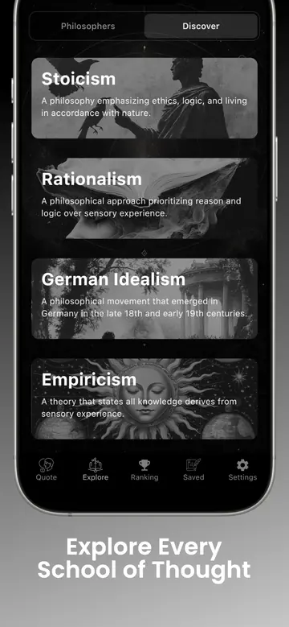

For most beginners, the best philosophy app combines short daily entry points with sourced quotes, plain-language school and thinker guides, useful search, saved collections, and no pressure to master a fixed curriculum before exploring.
First, decide what you want philosophy to do
“Learn philosophy” can mean several things. You may want a daily idea that improves reflection, a structured survey of the academic field, help reading primary texts, or a way to compare answers to questions about knowledge, ethics, freedom, and meaning. No single format is best at every job.
A course app is useful when you want sequence, exercises, and completion. A reading app is useful when you already know which texts matter. A quote-and-discovery app works well when you want philosophy to enter ordinary life in small sessions and then reveal more context on demand. The best choice is the one whose rhythm matches the time and attention you can actually give it.
Write one sentence before comparing apps: “I want to use philosophy to ____.” If your answer is “think more carefully each morning,” choose for daily practice. If it is “understand the history of Western epistemology,” choose for structured study. Clear intent protects you from impressive feature lists that do not solve your problem.
Six features a beginner philosophy app should have
1. A small, clear starting point
The opening screen should not resemble a university catalog. A daily quote, question, or short concept gives you something definite to examine. Good onboarding asks about interests without making you configure the entire discipline before reading anything.
2. Source and author context
Philosophy depends on arguments and distinctions, not celebrity attribution. An app should identify the philosopher and, when possible, the work behind a quotation. Biographical context matters too, but it should support the idea rather than replace it with trivia.
3. Explanations of schools and concepts
Beginners need maps. Clear entries on Stoicism, Existentialism, Empiricism, Rationalism, Buddhism, Utilitarianism, and other traditions help show that philosophers are often answering shared questions from different starting points. The map should be navigable without presenting schools as rigid teams.
4. Search, filters, and connections
Curiosity rarely follows a syllabus. Search lets you move from “Marcus Aurelius” to Stoicism, from Stoicism to virtue, and from virtue to Aristotle or Confucius. Related links are especially valuable because they show intellectual relationships rather than isolated facts.
5. A way to keep and organize ideas
Saving is useful only when retrieval is easy. Look for bookmarks and custom collections, not an endless undifferentiated favorites list. Organize ideas by questions—“What can I know?”, “How should I act?”, “What deserves my attention?”—to begin thinking across traditions.
6. A practice that respects your attention
Notifications and widgets can support a habit, but they should be configurable. Offline access is helpful for focused reading. The interface should make it possible to read without ads, social pressure, or streak mechanics becoming more important than understanding.

How to evaluate an app before committing
Read three entries on subjects you know a little about. Check whether they name sources, distinguish a philosopher's view from a modern interpretation, and avoid suspiciously perfect quotations. Look at the app's update history and store reviews. A large library is valuable only if the material is curated and the interface helps you find it again.
Then test the daily experience. Can you reach a meaningful idea quickly? Can you move from the idea to its thinker and school? Can you control reminders? Can you export or share without turning the quote into unattributed decoration? A useful philosophy learning app should reward curiosity, not merely time spent inside it.
Watch for red flags: quotations with no work attached, claims that one philosophy guarantees happiness, AI answers presented as historical fact, and summaries that erase disagreement. An AI assistant can help form questions or suggest connections, but primary texts and reviewed reference works remain the better authority for what a philosopher actually argued.
A beginner path through Philosophia
Start with one daily quote, open the thinker profile, read the related school, then save the idea to a question-based collection. Repeat with a different tradition before deciding what you agree with.
Philosophia is designed for this movement from brief encounter to wider context. The quote feed provides the small starting point. Explore contains 50+ schools; philosopher profiles cover 200+ thinkers; bookmarks and collections turn discoveries into a personal library. Notifications and widgets make the practice repeatable without requiring a long study block.
For your first week, choose breadth over allegiance. Read one Stoic, one ancient Greek outside Stoicism, one modern European thinker, one Eastern tradition, and one philosopher whose conclusion you expect to reject. Save questions rather than only agreeable answers. At the end of the week, revisit the collection and identify one tension worth exploring.
Pair the app with a complete beginner text. OpenStax's peer-reviewed Introduction to Philosophy surveys logic, metaphysics, epistemology, value theory, and philosophical history. Use an app for continuity and discovery; use longer texts when an idea deserves its full argument.
A simple decision rule
Choose a course-first app if your priority is lessons and assessment. Choose a primary-text reader if you already have a reading list. Choose Philosophia if you want daily philosophy quotes, broad discovery, widgets, sourced context, and a growing personal library in one place.
The best philosophy app for a beginner is not the one with the most content. It is the one that helps you return tomorrow with a better question than the one you had today.